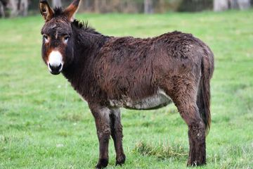
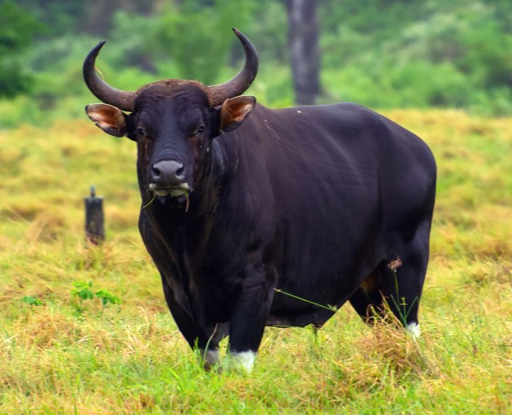

|  | Keledai adalah hewan domestik dari keluarga kuda. Keledai merupakan keturunan Keledai liar Afrika, Equus africanus dan telah digunakan sebagai hewan pekerja selama setidaknya 5000 tahun. Read more... |
 |
Orang utan atau mawas adalah salah satu jenis kera besar dengan lengan panjang dan berbulu kemerahan atau cokelat, yang hidup di hutan tropis Indonesia dan Malaysia, khususnya di Pulau Kalimantan dan Sumatra. Read more... |
|  | Banteng atau tembadau adalah spesies hewan yang sekerabat dengan sapi dan ditemukan di berbagai wilayah Asia Tenggara. Read more... |